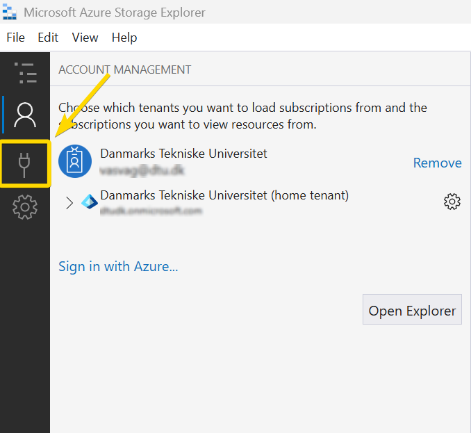

Files¶
Files are the smallest data units in the system. Each file belongs to a dataset and represents a single piece of data, such as a sequence file, image, table, or model output in a specific format.
Standard Upload¶
Once your dataset has been successfully created in Data Catalog, you can start adding files or directories directly from the dataset’s home page. The standard upload section is located on the Files tab and it supports multiple upload options for flexibility.
There are three options available:
Drag & Dropfiles from your computer into the upload areaClick
Choose filesto select individual files from your local storageor
Click
Choose directoryto upload an entire folder (ideal for keeping related files together)
➤ Once uploaded, files will appear in the list with details such as name, and upload date, making it easy to keep track of its content.
Note
Files are queued on upload, meaning they transfer sequentially rather than in parallel. Total upload time depends entirely on your network’s upload speed. For large transfers (5+ GB), use a wired connection instead of Wi-Fi to achieve faster and more stable uploads.
Tip
When uploading a directory, the folder structure is preserved for better organization.
Advanced upload¶
If you have a lot of large data to upload, we recommend that you use the advanced upload option. This creates a temporary upload folder in the dataset’s storage location, where you can upload your files using one of the following external tools:
AzCopy
Azure Storage Explorer
Let’s see how to use each tool in more details:
AzCopy¶
AzCopy is a command-line utility that allows you to transfer files and directories directly to the dataset’s storage location.
Before you start, make sure you have AzCopy downloaded and saved on your computer. For more detailed installation instructions, see here.
Note
The commands below use Windows-style paths. If you are on Mac, replace backslashes "\" with forward slashes "/" and adjust the path accordingly (e.g. "/Users/YOUR_USERNAME/" instead of "C:\Users\YOUR_USERNAME\").
Open Command Prompt (Windows) or Terminal (Mac)
Navigate to where AzCopy is saved on your computer
Log in to AzCopy:
azcopy login
A link and a code will appear. Open the link in your browser, enter the code, and sign in with your Microsoft account.
Request a URL from the Data Catalog
Upload files or folder using one of the following commands:
Specific files from the same folder:
azcopy copy "C:\Users\YOUR_USERNAME\Documents" "UPLOAD_URL" --include-pattern "file1.csv;file2.xlsx"
Entire folder:
azcopy copy "C:\Users\YOUR_USERNAME\Documents\my-data-folder" "UPLOAD_URL" --recursive
After the command finishes, AzCopy displays a summary. Make sure Final Job Status: Completed and the number of completed transfers matches your files.
Once the upload is complete, go back to the Data Catalog and click
Finalize Upload. This will transfer the files back to the dataset and make them visible in the file list.
Azure Storage Explorer¶
Azure Storage Explorer is a free desktop application by Microsoft. It is an alternative to AzCopy for users who prefer not to use the command line. For more information on how to install see here.
Request a URL from the Data Catalog
Open Azure Storage Explorer and log in with your Microsoft account
Click
plug iconon the left side bar to open the Connect dialogSelect
ADLS Gen2 container or directorySelect
Sign in using OAuthand clicknextSelect your Azure account and click
nextOptionally give the connection a display name and paste the upload URL provided from the Data Catalog, then click
nextClick
ConnectUpload your files or folders to the temporary storage location. Check the Activities panel at the bottom to make sure all transfers completed successfully.
Go back to the Data Catalog and click
Finalize Uploadto move the files into the dataset and make them visible in the files list.
The screenshots below illustrate steps 3 to 9:

Step 2
Manage Files¶
You can perform basic actions on files or directories in the Data Catalog:
Download: Click the icon to save a file locally and view its details.
Delete: Click the icon to remove files that are no longer needed.
Cancel Upload: While a file is uploading, a Cancel button appears next to it. Click to stop and remove the in-progress upload in case you selected the wrong files.
*Please review files before deleting to avoid accidental data loss.

Manage files¶
Warning
Currently, deleting a file permanently removes it from the Data Catalog. However, files can still be restored within 7 days of deletion through the storage account. If you need to restore a file, please contact Research Data Management team at rdm@bright.dtu.dk or Pasquale Domenico Colaianni at pasdom@dtu.dk.
*Keep in mind that this behavior may change in future releases.